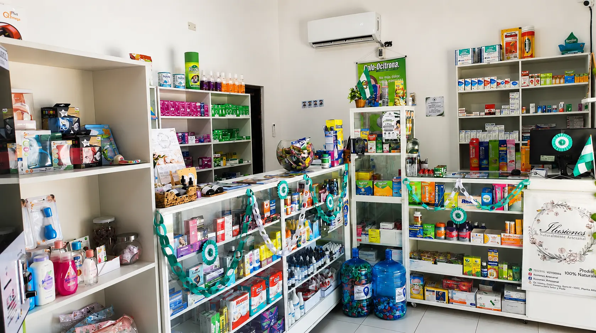

¿Cuándo necesitas una nebulización?
Información clara para reconocer cuándo conviene buscar valoración profesional.
Farmacia, atención médica, enfermería, laboratorio, fisioterapia y sueroterapia en un mismo lugar. Atención profesional, cercana y de confianza.

Somos una organización de salud construida alrededor de la cercanía, el profesionalismo y la confianza. Integramos farmacia, atención médica, enfermería, laboratorio y fisioterapia para acompañar a nuestra comunidad.
Contenido educativo claro, práctico y orientado al bienestar.
Información clara para reconocer cuándo conviene buscar valoración profesional.
Cuándo un control puede aportar información útil sobre tu salud.
Conoce sus usos y por qué requiere valoración profesional.
Escríbenos para conocer disponibilidad y coordinar tu atención.